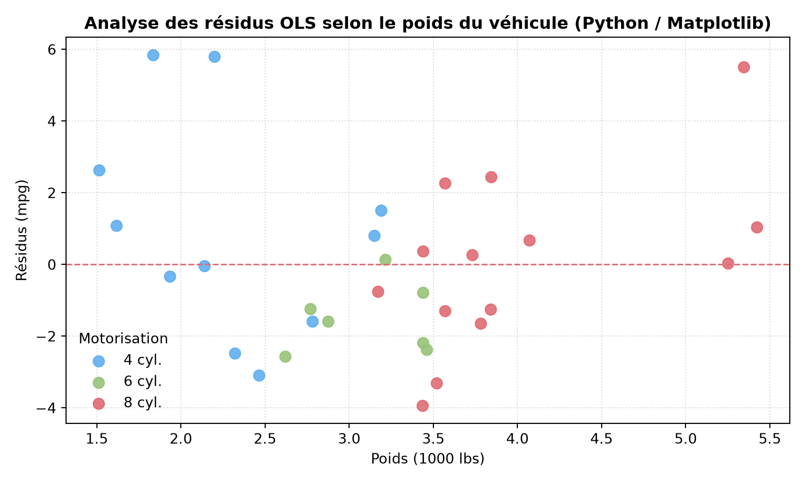

Transfert bidirectionnel d’objets R → Python → R sur le jeu de données mtcars
Auteur·rice
Membre 1, Membre 2 — Hôpital 1, Hôpital 2
1 Introduction
Ce document présente l’interopérabilité native entre R et Python au sein d’un même document Quarto piloté par knitr et le package reticulate.
Le flux méthodologique suit six étapes :
Chargement et mise en forme des données dans la session R (mtcars).
Accès aux variables R depuis Python via le préfixe r. et modélisation statistique.
Rapatriement des prédictions et résidus dans R via le préfixe py$.
Visualisation 2D dans R (ggplot2) et dans Python (matplotlib) avec fond transparent et palette One Dark Pro automatiques.
Visualisation 3D interactive dans R (plotly::plot_ly) avec adaptation automatique One Dark Pro.
Visualisation 3D interactive dans Python (plotly.express.scatter_3d) avec adaptation automatique One Dark Pro.
2 Étape 1 : Préparation des données dans R
Le jeu de données de référence mtcars est chargé dans l’environnement R. Nous sélectionnons la consommation (mpg), le poids (wt) et la puissance (hp).
data(mtcars)cars_data <- mtcars[, c("mpg", "wt", "hp")]cars_data$model <-rownames(mtcars)knitr::kable(head(cars_data, 6), caption ="Aperçu des 6 premières lignes du jeu mtcars (R)")
Aperçu des 6 premières lignes du jeu mtcars (R)
mpg
wt
hp
model
Mazda RX4
21.0
2.620
110
Mazda RX4
Mazda RX4 Wag
21.0
2.875
110
Mazda RX4 Wag
Datsun 710
22.8
2.320
93
Datsun 710
Hornet 4 Drive
21.4
3.215
110
Hornet 4 Drive
Hornet Sportabout
18.7
3.440
175
Hornet Sportabout
Valiant
18.1
3.460
105
Valiant
3 Étape 2 : Modélisation statistique dans Python
Le préfixe r. permet au bloc Python d’accéder directement au dataframe R sans sérialisation sur disque. Nous ajustons une régression linéaire multiple modélisant la consommation (mpg) en fonction du poids (wt) et de la puissance du véhicule (hp).
import numpy as npimport pandas as pd# 1. Accès transparent au dataframe défini dans Rcars = r.cars_data.copy()# 2. Estimation des moindres carrés ordinaires (OLS)try:import statsmodels.api as sm X = sm.add_constant(cars[["wt", "hp"]]) y = cars["mpg"] model = sm.OLS(y, X).fit() cars["Predicted"] = np.round(model.predict(X), 2) cars["Residuals"] = np.round(model.resid, 2)exceptImportError: X = np.column_stack([np.ones(len(cars)), cars["wt"], cars["hp"]]) y = cars["mpg"].values beta = np.linalg.lstsq(X, y, rcond=None)[0] cars["Predicted"] = np.round(X @ beta, 2) cars["Residuals"] = np.round(y - cars["Predicted"], 2)
4 Étape 3 : Retour des résultats vers R
Le préfixe py$ permet à la session R de récupérer l’objet calculé dans la session Python. Nous vérifions que les colonnes calculées (Predicted et Residuals) sont bien conservées.
cars_results <- py$carsstopifnot(all(c("Predicted", "Residuals") %in%names(cars_results)),nrow(cars_results) ==nrow(cars_data))knitr::kable(head(cars_results[, c("model", "mpg", "wt", "hp", "Predicted", "Residuals")], 8),caption ="Données augmentées avec les prédictions et résidus calculés par Python")
Données augmentées avec les prédictions et résidus calculés par Python
model
mpg
wt
hp
Predicted
Residuals
Mazda RX4
Mazda RX4
21.0
2.620
110
23.57
-2.57
Mazda RX4 Wag
Mazda RX4 Wag
21.0
2.875
110
22.58
-1.58
Datsun 710
Datsun 710
22.8
2.320
93
25.28
-2.48
Hornet 4 Drive
Hornet 4 Drive
21.4
3.215
110
21.27
0.13
Hornet Sportabout
Hornet Sportabout
18.7
3.440
175
18.33
0.37
Valiant
Valiant
18.1
3.460
105
20.47
-2.37
Duster 360
Duster 360
14.3
3.570
245
15.60
-1.30
Merc 240D
Merc 240D
24.4
3.190
62
22.89
1.51
5 Étape 4 : Visualisation diagnostique dans R (ggplot2)
Nous représentons graphiquement la consommation observée par rapport aux prédictions calculées par le modèle Python. Le fond transparent et la palette One Dark Pro sont injectés automatiquement par auto_dark_on().
library(ggplot2)cars_results$Cylindres <-factor(mtcars$cyl, labels =c("4 cyl.", "6 cyl.", "8 cyl."))ggplot(cars_results, aes(x = Predicted, y = mpg, color = Cylindres)) +geom_point(size =3.2, alpha =0.9) +geom_abline(intercept =0, slope =1, linetype ="dashed", color ="#e06c75", linewidth =0.8) +annotate("text", x =28, y =29, label ="Ligne idéale (y = x)", color ="#e06c75", fontface ="italic") +labs(title ="Validation croisée R-Python sur mtcars",subtitle ="Consommation observée (R) vs Consommation prédite par le modèle OLS (Python)",x ="Consommation prédite (mpg - Python)",y ="Consommation réelle (mpg - R)",color ="Motorisation" ) +theme_minimal(base_size =12)

6 Étape 5 : Visualisation directe dans Python (matplotlib)
Grâce à auto_dark_on() activé dans le bloc setup R (auto-dark-setup.R), les graphiques produits dans les blocs {python} bénéficient exactement de la même mécanique automatique que les graphiques R :
Palette One Dark Pro automatique (axes.prop_cycle aligné sur la palette de auto_dark_palette()).
Génération automatique du compagnon sombre (*-auto-dark.png) par le hook knitr / magick existant de auto-dark-setup.R.
import matplotlib.pyplot as plt# Aucun fond (facecolor / transparent) ni couleur de série n'est codé en dur :fig, ax = plt.subplots(figsize=(8, 4.8))for cyl, grp in cars.groupby(r.mtcars["cyl"]): ax.scatter(grp["wt"], grp["Residuals"], label=f"{int(cyl)} cyl.", s=60, alpha=0.9)ax.axhline(0, color="#e06c75", linestyle="--", linewidth=1.1)ax.set_title("Analyse des résidus OLS selon le poids du véhicule (Python / Matplotlib)", fontweight="bold")ax.set_xlabel("Poids (1000 lbs)")ax.set_ylabel("Résidus (mpg)")ax.legend(title="Motorisation", frameon=False)ax.grid(True, linestyle=":", alpha=0.5)plt.tight_layout()plt.show()

7 Étape 6 : Visualisation 3D interactive dans R (plotly)
L’extension intercepte également les widgets plotly R via knit_print.plotly : le fond de la scène 3D (paper_bgcolor, plot_bgcolor, scene.bgcolor, plans xaxis/yaxis/zaxis) est rendu transparent automatiquement, les groupes utilisent la palette One Dark Pro sans spécifier colors = ..., et auto-dark-renderings.js met à jour les polices et grilles lors du basculement clair/sombre.
8 Étape 7 : Visualisation 3D interactive dans Python (plotly.express)
L’équivalent Python (plotly.express.scatter_3d ou plotly.graph_objects) bénéficie du même traitement automatique : le template onedark_auto est injecté dans plotly.io.templates et la figure Python est convertie en widget interactif adaptatif sans aucun fond ni couleur codés en dur.